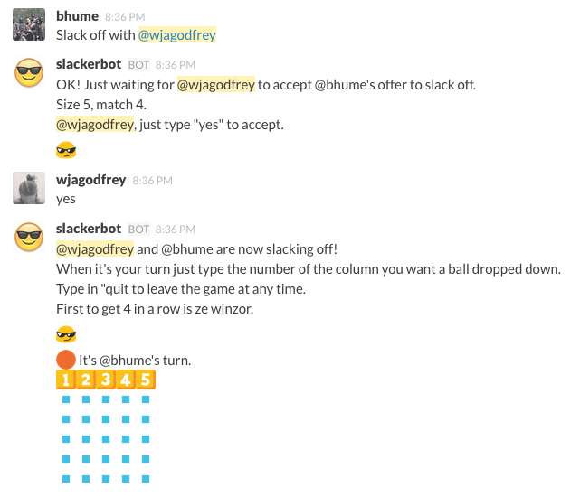
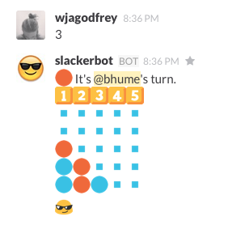
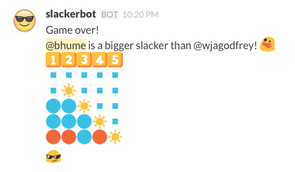

Slackerbot

Slackerbot is a bot for the slackers.
He hosts configurable connect-4 style games in slack channels.Having a case of the Mondays? Slackerbot has your back!
Team disagreements? Battle it out with slackerbot!
To have your own slackerbot:
Download or clone him from github.
> npm install
> npm install -g coffee-script
Configure the config.coffee file however you want.
Make a new file - authToken.coffee. The contents should look like this:
module.exports = ''
Make a new bot and add it's auth token to the authToken.coffee file.
> coffee app.coffee
Invite your bot to the slack channel you entered in it's config.coffee.

How to use slackerbot:
Slack off with *username*
- Asks the user if they want to jump into a game.
- Default grid size is 5, match size is 4.
Slack off with *username* size *number* match *number*
- Does the same as above, only defines the size of the grid and how many it's matching for.
- Max grid size is 10, min grid size is 4.
- Max match size must be less than the grid size and greater than 3.
yes
- Accepts a game request.
*number*
- If typed while in a game during a turn, will drop a token down that column.
- Otherwise does nothing.
quit
- If in a game, leaves a game.
- Otherwise does nothing.

If you want to add more to him please feel free, send me your pull requests!
If you liked this, follow me on twitter.
Happy slacking!